Cooking Survival Data: 5-Minute Recipes
Klaus Holst & Thomas Scheike
2026-05-21
Source:vignettes/cooking-survival-data.Rmd
cooking-survival-data.RmdOverview
Simulation of survival data is important for both theoretical and practical work. In a practical setting we might wish to validate that standard errors are valid even in a rather small sample, or validate that a complicated procedure is doing as intended. Therefore it is useful to have simple tools for generating survival data that resembles a particular dataset as closely as possible. In a theoretical setting we are often interested in evaluating the finite-sample properties of a new procedure in different settings that are motivated by a specific practical problem. The aim is to provide such tools.
Bender et al. discussed how to generate survival data based on the Cox model, and considered only a subset of the available parametric survival models (Weibull, exponential). We start by restricting attention to piecewise linear baseline functions, which make it easy to simulate data that follows closely the baseline estimated from the data using semi- or nonparametric models. This makes it straightforward to capture important aspects of the data. We later return to extended Weibull baseline hazard models.
Different survival models can be cooked, and we here give recipes for hazard and cumulative incidence based simulations. More recipes are given in vignette about recurrent events.
- hazard based.
- Cox Regression models.
- piecewise constant baselines
- parametric Weibull models
- Cox Regression models.
- cumulative incidence.
- Regression models with cloglog or logistic link.
- recurrent events (see recurrent events vignette).
- Regression models with exp link, for rates or Ghosh-Lin type.
Hazard based, Cox models
Given a survival time T with cumulative hazard \Lambda(t)=\int_0^t \lambda(s) ds, it follows that, with E \sim Exp(1) (exponential with rate 1), \Lambda^{-1}(E) will have the same distribution as T.
This provides the basis for simulations of survival times with a given hazard and is a consequence of this simple calculation P(\Lambda^{-1}(E) > t) = P(E > \Lambda(t)) = \exp( - \Lambda(t)) = P(T > t).
Similarly if T given X has hazard on Cox form \lambda_0(t) \exp( X^T \beta) where \beta is a p-dimensional regression coefficient and \lambda_0(t) a baseline hazard function, then it is useful to observe also that \Lambda^{-1}(E/HR) with HR=\exp(X^T \beta) has the same distribution as T given X.
Therefore, if the inverse of the cumulative hazard can be computed, we can generate survival times with a specified hazard function. One useful observation is that for a piecewise linear continuous cumulative hazard on an interval [0,\tau], \Lambda_l(t), it is easy to compute the inverse.
Further, any cumulative hazard can be approximated by a piecewise linear continuous cumulative hazard, enabling simulation from this approximation. Recall that fitting the Cox model to data yields a piecewise constant cumulative hazard and regression coefficients; with these in hand we can approximate the piecewise constant Breslow estimator by simply connecting the jump points with straight lines.
The engine is to simulate data with a given linear cumulative hazard.
First generating survival data based on the cumulative hazard
cumhaz:
nsim <- 1000
chaz <- c(0,1,1.5,2,2.1)
breaks <- c(0,10, 20, 30, 40)
cumhaz <- cbind(breaks,chaz)
X <- rbinom(nsim,1,0.5)
beta <- 0.2
rrcox <- exp(X * beta)
pctime <- rchaz(cumhaz,n=nsim)
pctimecox <- rchaz(cumhaz,rrcox)Now we fit a simple Cox model
library(mets)
n <- nsim
data(bmt)
bmt$bmi <- rnorm(408)
dcut(bmt) <- gage~age
data <- bmt
cox1 <- phreg(Surv(time,cause==1)~tcell+platelet+age,data=bmt)
dd <- sim_phreg(cox1,n,data=bmt)
dtable(dd,~cause)
#>
#> cause
#> 0 1
#> 529 471
scox1 <- phreg(Surv(time,cause==1)~tcell+platelet+age,data=dd)
cbind(coef(cox1),coef(scox1))
#> [,1] [,2]
#> tcell -0.6517920 -0.4564152
#> platelet -0.5207454 -0.5113844
#> age 0.4083098 0.3860139
par(mfrow=c(1,1))
plot(scox1,col=2); plot(cox1,add=TRUE,col=1)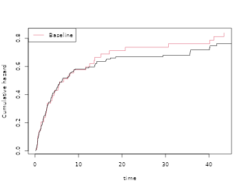
## modify regression coefficients
cox10 <- cox1
cox10$coef <- c(0,0.4,0.3)
dd <- sim_phreg(cox10,n,data=bmt)
dtable(dd,~cause)
#>
#> cause
#> 0 1
#> 427 573
scox1 <- phreg(Surv(time,cause==1)~tcell+platelet+age,data=dd)
cbind(coef(cox10),coef(scox1))
#> [,1] [,2]
#> tcell 0.0 0.05615982
#> platelet 0.4 0.34930321
#> age 0.3 0.42496872
par(mfrow=c(1,1))
plot(scox1,col=2); plot(cox10,add=TRUE,col=1)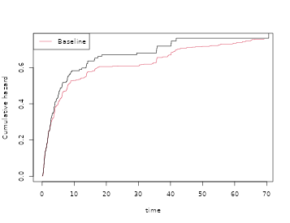
Multiple Cox models for cause-specific hazards can be combined. Below
we draw the covariates manually; alternatively, sim_phregs
draws covariates directly from the data.
data(bmt);
cox1 <- phreg(Surv(time,cause==1)~tcell+platelet,data=bmt)
cox2 <- phreg(Surv(time,cause==2)~tcell+platelet,data=bmt)
X1 <- bmt[,c("tcell","platelet")]
n <- nsim
xid <- sample(1:nrow(X1),n,replace=TRUE)
Z1 <- X1[xid,]
Z2 <- X1[xid,]
rr1 <- exp(as.matrix(Z1) %*% cox1$coef)
rr2 <- exp(as.matrix(Z2) %*% cox2$coef)
d <- rcrisk(cox1$cum,cox2$cum,rr1,rr2)
dd <- cbind(d,Z1)
scox1 <- phreg(Surv(time,status==1)~tcell+platelet,data=dd)
scox2 <- phreg(Surv(time,status==2)~tcell+platelet,data=dd)
par(mfrow=c(1,2))
plot(cox1); plot(scox1,add=TRUE,col=2)
plot(cox2); plot(scox2,add=TRUE,col=2)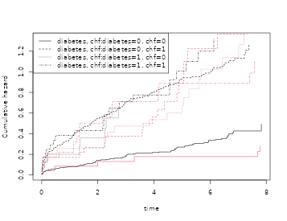
cbind(cox1$coef,scox1$coef,cox2$coef,scox2$coef)
#> [,1] [,2] [,3] [,4]
#> tcell -0.4232606 -0.3727007 0.3991068 0.8167564
#> platelet -0.5654438 -0.5834273 -0.2461474 -0.3190683We now consider a fully nonparametric model with stratified baselines.
data(sTRACE)
dtable(sTRACE,~chf+diabetes)
#>
#> diabetes 0 1
#> chf
#> 0 223 16
#> 1 230 31
coxs <- phreg(Surv(time,status==9)~strata(diabetes,chf),data=sTRACE)
strata <- sample(0:3,nsim,replace=TRUE)
simb <- sim_phreg(coxs,nsim,data=NULL,strata=strata)
cc <- phreg(Surv(time,status)~strata(strata),data=simb)
plot(coxs,col=1); plot(cc,add=TRUE,col=2)
simb1 <- sim_phreg(coxs,nsim,data=sTRACE)
cc1 <- phreg(Surv(time,status)~strata(diabetes,chf),data=simb1)
plot(cc1,add=TRUE,col=3)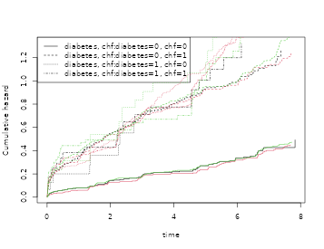
We now fit cause-specific hazard models with three causes (treating censoring as one of them) and generate competing risks data with hazards taken from the fitted Cox models. The following example includes stratified baselines for some of the models:
## competing risks with phreg
cox0 <- phreg(Surv(time,cause==0)~tcell+platelet,data=bmt)
cox1 <- phreg(Surv(time,cause==1)~tcell+platelet,data=bmt)
cox2 <- phreg(Surv(time,cause==2)~strata(tcell)+platelet,data=bmt)
coxs <- list(cox0,cox1,cox2)
dd <- sim_phregs(coxs,n,data=bmt)
## verify cause-specific hazards match fitted model; increase n for better agreement
scox0 <- phreg(Surv(time,cause==1)~tcell+platelet,data=dd)
scox1 <- phreg(Surv(time,cause==2)~tcell+platelet,data=dd)
scox2 <- phreg(Surv(time,cause==3)~strata(tcell)+platelet,data=dd)
cbind(cox0$coef,scox0$coef)
#> [,1] [,2]
#> tcell 0.1912407 0.3053846
#> platelet 0.1563789 0.2586927
cbind(cox1$coef,scox1$coef)
#> [,1] [,2]
#> tcell -0.4232606 -0.6611783
#> platelet -0.5654438 -0.4566101
cbind(cox2$coef,scox2$coef)
#> [,1] [,2]
#> platelet -0.2271912 -0.1857664
par(mfrow=c(1,3))
plot(cox0); plot(scox0,add=TRUE,col=2);
plot(cox1); plot(scox1,add=TRUE,col=2);
plot(cox2); plot(scox2,add=TRUE,col=2); 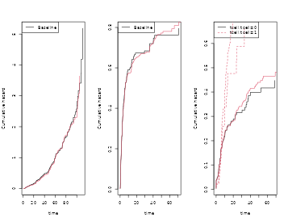
########################################
## second example
########################################
cox1 <- phreg(Surv(time,cause==1)~strata(tcell)+platelet,data=bmt)
cox2 <- phreg(Surv(time,cause==2)~tcell+strata(platelet),data=bmt)
coxs <- list(cox1,cox2)
dd <- sim_phregs(coxs,n,data=bmt)
scox1 <- phreg(Surv(time,cause==1)~strata(tcell)+platelet,data=dd)
scox2 <- phreg(Surv(time,cause==2)~tcell+strata(platelet),data=dd)
cbind(cox1$coef,scox1$coef)
#> [,1] [,2]
#> platelet -0.5658612 -0.6949669
cbind(cox2$coef,scox2$coef)
#> [,1] [,2]
#> tcell 0.4153706 0.2554993
par(mfrow=c(1,2))
plot(cox1); plot(scox1,add=TRUE);
plot(cox2); plot(scox2,add=TRUE); 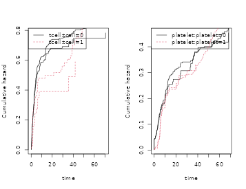
One further example, again fully nonparametric:
library(mets)
n <- nsim
data(bmt)
bmt$bmi <- rnorm(408)
dcut(bmt) <- gage~age
data <- bmt
cox1 <- phreg(Surv(time,cause==1)~strata(tcell,platelet),data=bmt)
cox2 <- phreg(Surv(time,cause==2)~strata(gage,tcell),data=bmt)
cox3 <- phreg(Surv(time,cause==0)~strata(platelet)+bmi,data=bmt)
coxs <- list(cox1,cox2,cox3)
dd <- sim_phregs(coxs,n,data=bmt,extend=0.002)
dtable(dd,~cause)
#>
#> cause
#> 0 1 2 3
#> 1 397 241 361
scox1 <- phreg(Surv(time,cause==1)~strata(tcell,platelet),data=dd)
scox2 <- phreg(Surv(time,cause==2)~strata(gage,tcell),data=dd)
scox3 <- phreg(Surv(time,cause==3)~strata(platelet)+bmi,data=dd)
cbind(coef(cox1),coef(scox1), coef(cox2),coef(scox2), coef(cox3),coef(scox3))
#> [,1] [,2]
#> bmi -0.1353399 -0.04444255
par(mfrow=c(1,3))
plot(scox1,col=2); plot(cox1,add=TRUE,col=1)
plot(scox2,col=2); plot(cox2,add=TRUE,col=1)
plot(scox3,col=2); plot(cox3,add=TRUE,col=1)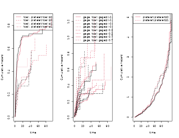
Summary of simulation functions
| Function | Purpose |
|---|---|
sim_phreg |
Single phreg model; supports stratified baselines |
sim_phregs |
List of cause-specific phreg models; draws covariates
automatically |
Delayed entry
If T given X have hazard on Cox form
\lambda_0(t) \exp( X^T \beta)
and we wish to generate data according to this hazard for those
that are alive at time s, that is draw
from the distribution of T given T>s (all given X ), then we note that
\Lambda_0^{-1}( \Lambda_0(s) + E/HR))
with HR=\exp(X^T \beta)) and
with E \sim Exp(1) has the distribution
we are after.
This is again a consequence of a simple calculation P_X\!\left(\Lambda^{-1}\!\left(\Lambda(s) + E/HR\right) > t\right) = P_X\!\left(E > HR\!\left(\Lambda(t) - \Lambda(s)\right)\right) = P_X(T > t \mid T > s).
We here illustrate how to simulate from a competing risks model based on Cox hazards.
data(bmt)
cox0 <- phreg(Surv(time, cause == 0) ~ tcell + platelet+age, data = bmt)
cox1 <- phreg(Surv(time, cause == 1) ~ tcell + platelet+age, data = bmt)
cox2 <- phreg(Surv(time, cause == 2) ~ strata(tcell) + platelet+age, data = bmt)
nsim <- 800
entry <- rbinom(nsim, 1, 0.5) * runif(nsim) * 60
dd <- sim_phreg(cox0,nsim, data = bmt,entry=entry)
scox0 <- phreg(Surv(entry,time, cause == 1) ~ tcell + platelet+age, data = dd)
cbind(cox0$coef, scox0$coef)
#> [,1] [,2]
#> tcell 0.09091888 0.11554247
#> platelet 0.15733517 0.09307867
#> age 0.10230287 0.11156111
par(mfrow = c(2, 2))
plot(cox0); plot(scox0, add = TRUE, col = 2)
dd <- sim_phregs(list(cox0, cox1, cox2), nsim, data = bmt,entry=entry)
scox0 <- phreg(Surv(entry,time, cause == 1) ~ tcell + platelet+age, data = dd)
scox1 <- phreg(Surv(entry,time, cause == 2) ~ tcell + platelet+age, data = dd)
scox2 <- phreg(Surv(entry,time, cause == 3) ~ strata(tcell) + platelet+age, data = dd)
cbind(cox0$coef, scox0$coef)
#> [,1] [,2]
#> tcell 0.09091888 0.006447759
#> platelet 0.15733517 0.074976667
#> age 0.10230287 -0.042215864
cbind(cox1$coef, scox1$coef)
#> [,1] [,2]
#> tcell -0.6517920 -0.6996524
#> platelet -0.5207454 -0.3419084
#> age 0.4083098 0.5513612
cbind(cox2$coef, scox2$coef)
#> [,1] [,2]
#> platelet -0.2178543 -0.20179035
#> age 0.1306184 0.02950711
plot(cox0); plot(scox0, add = TRUE, col = 2)
plot(cox1); plot(scox1, add = TRUE, col = 2)
plot(cox2); plot(scox2, add = TRUE, col = 2)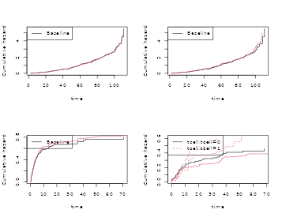
Parametric hazard models
While the semi‑parametric Cox model provides substantial flexibility for simulating survival data, there are situations where a fully parametric simulation model is convenient or preferable. Here we consider a Weibull model parametrized so that the cumulative hazard is given by \Lambda(t) = \lambda \cdot t^s where s is the shape parameter, and \lambda the rate parameter. We allow regression on both parameters \begin{align*} \lambda := \exp(\beta^\top X), \quad s := \exp(\gamma^\top Z) \end{align*} where X and Z are covariate vectors. Specifically, this opens up for exploring non‑proportional hazards when s depends on covariates.
Revisiting the TRACE data example we can compare the predictions from
the Cox and the Weibull-Cox model stratified by chf and
with a proportional hazard effect of age
data(sTRACE, package = "mets")
dat <- sTRACE
cox1 <- phreg(Surv(time, status > 0) ~ strata(chf) + I(age - 67), data = sTRACE)
coxw <- phreg_weibull(Surv(time, status > 0) ~ chf + age,
shape.formula = ~chf,
data = sTRACE
)
coxw
#>
#> - Weibull-Cox model -
#>
#> Call:
#> phreg_weibull(formula = Surv(time, status > 0) ~ chf + age, shape.formula = ~chf,
#> data = sTRACE)
#>
#> log-Likelihood: -684.750499
#>
#> n events obs.time
#> 500 264 2228.481
#>
#> Estimate Std.Err 2.5% 97.5% P-value
#> (Intercept) -5.59626 0.465886 -6.50938 -4.6831 3.070e-33
#> chf 0.83250 0.197629 0.44516 1.2198 2.526e-05
#> age 0.05331 0.006165 0.04123 0.0654 5.241e-18
#> ─────────────
#> s:(Intercept) -0.44096 0.116740 -0.66977 -0.2122 1.585e-04
#> s:chf -0.11794 0.133078 -0.37877 0.1429 3.755e-01
tt <- seq(0, max(sTRACE$time), length.out = 100)
newd <- data.frame(chf = c(1, 0), age=67)
pr <- predict(coxw, newdata = newd, times = tt, type="chaz")
plot(cox1, col = 1)
lines(tt, pr[, 1, 1], lty=2, lwd=2)
lines(tt, pr[, 1, 2], lty = 1, lwd = 2)To simulate data we can use the rweibullcox() function.
Note that the stats::rweibull() function gives a different
parametrization where the cumulative hazard is given by H(t) = (t/b)^s, i.e., with the same scale
parameter but where the scale parameter b is related to the rate parameter we
consider by r := b^{-s}.
n <- 5000
newd <- mets::dsample(size=n, sTRACE[,c("chf","age")]) # bootstrap covariates
lp <- predict(coxw, newdata=newd, type="lp") # linear-predictors
head(lp)
#> [,1] [,2]
#> X4522 -1.641818 -0.4409608
#> X1337 -1.576030 -0.4409608
#> X4490 -3.052267 -0.4409608
#> X5363 -2.003547 -0.4409608
#> X4518 -2.093627 -0.5589006
#> X1354 -1.154411 -0.5589006
## simulate event times
tt <- rweibullcox(nrow(lp), rate = exp(lp[,1]), shape= exp(lp[,2]))
# censoring model
censw <- phreg_weibull(Surv(time, status==0) ~ 1, data=sTRACE)
censpar <- exp(coef(censw))
censtime <- pmin(8, rweibullcox(nrow(lp), censpar[1], censpar[2]))
# combined simulated data
newd <- transform(newd, time=pmin(tt, censtime), status=(tt<=censtime))
head(newd)
#> chf age time status
#> X4522 0 74.174 4.104843 TRUE
#> X1337 0 75.408 4.239002 TRUE
#> X4490 0 47.718 8.000000 FALSE
#> X5363 0 67.389 1.402283 TRUE
#> X4518 1 50.084 1.246696 TRUE
#> X1354 1 67.701 6.829409 FALSE
# estimate weibull model on new data
phreg_weibull(Surv(time,status) ~ chf + age, ~chf, data=newd)
#>
#> - Weibull-Cox model -
#>
#> Call:
#> phreg_weibull(formula = Surv(time, status) ~ chf + age, shape.formula = ~chf,
#> data = newd)
#>
#> log-Likelihood: -6692.027131
#>
#> n events obs.time
#> 5000 2613 21578.83
#>
#> Estimate Std.Err 2.5% 97.5% P-value
#> (Intercept) -5.70070 0.157299 -6.00900 -5.39240 1.365e-287
#> chf 0.86612 0.059267 0.74996 0.98229 2.290e-48
#> age 0.05453 0.002144 0.05033 0.05873 9.532e-143
#> ─────────────
#> s:(Intercept) -0.42290 0.033445 -0.48845 -0.35735 1.199e-36
#> s:chf -0.13715 0.039317 -0.21421 -0.06009 4.859e-04All these steps are wrapped in the simulate method:
# simulate(coxw, n = 5, cens.model = NULL, data=newd, var.names = c("time", "status"))
simulate(coxw, nsim = 5)
#> no wmi status chf age sex diabetes time vf
#> X6167 6167 1.8 TRUE 0 54.418 1 0 1.329640 0
#> X3847 3847 1.6 FALSE 1 66.119 0 0 7.635526 1
#> X695 695 0.8 TRUE 1 74.377 1 1 4.424567 0
#> X1599 1599 2.0 TRUE 0 74.986 0 0 3.600678 0
#> X6045 6045 2.0 TRUE 0 79.997 0 0 3.737537 0Multistate models: The Illness Death model
Using hazard-based simulation with delayed entry we can simulate data from the general illness-death model. The cumulative hazards for each transition must be specified.
We specify
- \Lambda_{12}(t) the cumulative hazard for 1 \rightarrow 2 transitions
- \Lambda_{21}(t) the cumulative hazard for 2 \rightarrow 1 transitions
- \Lambda_{13}(t) the cumulative hazard for 1 \rightarrow 3 transitions
- \Lambda_{23}(t) the cumulative hazard for 2 \rightarrow 3 transitions
Transitions are then generated using these hazards. Covariate effects can be included via proportional hazards models by supplying hazard ratios for all components, as well as an exponential censoring model. Dependence between transitions can be introduced via:
-
dependence=0: independence -
dependence=1: all hazards share a common gamma-distributed frailty (variancevar.z)
We pass the cumulative hazards for each transition to
simMultistate to simulate data from the model, then
re-estimate the parameters on the simulated data to validate the
procedure.
data(CPH_HPN_CRBSI)
dr <- CPH_HPN_CRBSI$terminal
base1 <- CPH_HPN_CRBSI$crbsi
base4 <- CPH_HPN_CRBSI$mechanical
dr2 <- scalecumhaz(dr,1.5)
cens <- rbind(c(0,0),c(2000,0.5),c(5110,3))
iddata <- sim_multistate(nsim,base1,base1,dr,dr2,cens=cens)
dlist(iddata,.~id|id<3,n=0)
#> id: 1
#> entry time status rr death from to start stop
#> 1 0 201.9469 3 1 1 1 3 0 201.9469
#> ------------------------------------------------------------
#> id: 2
#> entry time status rr death from to start stop
#> 2 0.0000 395.3879 2 1 0 1 2 0.0000 395.3879
#> 801 395.3879 555.8022 3 1 1 2 3 395.3879 555.8022
### estimating rates from simulated data
c0 <- phreg(Surv(start,stop,status==0)~+1,iddata)
c3 <- phreg(Surv(start,stop,status==3)~+strata(from),iddata)
c1 <- phreg(Surv(start,stop,status==1)~+1,subset(iddata,from==2))
c2 <- phreg(Surv(start,stop,status==2)~+1,subset(iddata,from==1))
###
par(mfrow=c(2,2))
plot(c0)
lines(cens,col=2)
plot(c3,main="rates 1-> 3 , 2->3")
lines(dr,col=1,lwd=2)
lines(dr2,col=2,lwd=2)
###
plot(c1,main="rate 1->2")
lines(base1,lwd=2)
###
plot(c2,main="rate 2->1")
lines(base1,lwd=2)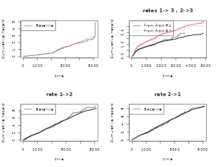
Cumulative incidence
In this section we discuss how to simulate competing risks data with a specified cumulative incidence function. We consider for simplicity a competing risks model with two causes and denote the cumulative incidence functions as F_1(t,X) = P(T < t, \epsilon=1|X) and F_2(t,X) = P(T < t, \epsilon=2|X), given covariate X.
To generate data with the required cumulative incidence functions, a simple approach is to first determine whether the subject experiences an event and, if so, from which cause; then draw the event time according to the conditional distribution.
For simplicity we consider survival times in a fixed interval [0,\tau]. Given X:
- first, flip a three-sided coin with probabilities F_1(\tau,X), F_2(\tau,X), 1-F_1(\tau,X)-F_2(\tau,X) to decide whether the subject survives or experiences one of the two causes.
- second, draw the event time using the cumulative incidence distribution. The timing of a cause j event is T = \tilde F_j^{-1}(U,X) with \tilde F_j(s,X) = F_j(s,X)/F_j(\tau,X) and U uniform.
Then indeed P(T \leq t, \epsilon=j|X) = F_j(t,X) for j=1,2.
We again note and use that if \tilde F_j(s) and F_j(s) are piecewise linear continuous functions then the inverse is easy to compute.
A couple of details worth noting:
- the coin flip to determine cause is based on an underlying uniform, pU, which can be supplied and shared across subjects to generate dependence in the risk.
- the uniform used for generating the timing, U, can also be supplied and shared across subjects to generate dependence in the timing.
Cumulative incidence I
Here we simulate two causes of death with two binary covariates using a logistic link \begin{align*} F_1(t,X) &= \frac{ \Lambda_1(t,\rho_1) exp(X^T \beta_1)}{1+\Lambda_1(t,\rho_1) exp(X^T \beta_1)} \end{align*} and F_2 here enforcing the sum condition F_1+F_2 \leq 1 \begin{align*} F_2(t,X) & = \frac{ \Lambda_2(t,\rho_2) exp(X^T \beta_2)}{1+\Lambda_2(t,\rho_2) exp(X^T \beta_2)} [ 1- F_1(\tau,X) ] \end{align*} or without the constraint \begin{align*} F_2(t,X) & = \frac{ \Lambda_2(t,\rho_2) exp(X^T \beta_2)}{1+\Lambda_2(t,\rho_2) exp(X^T \beta_2)}. \end{align*} When the sum condition is not enforced through the construction, then it is enforced ad-hoc when drawing the cause of death.
The baselines are given as \Lambda_j(t) = \rho_1 (1- exp(-t/r_j)) where \rho_j and r_j are positive constants, and here \tau=6.
To simulate the survival time we use a piecewise linear approximation of the cumulative incidence functions and will thus depends on some grid for linear approximation. Our linear approximation can be made arbitrarily close to any specific smooth cumulative incidence function.
The function simul_cifs
- uses a time-scale [0,6], which can obviously be rescaled.
- takes regression coefficients as a single vector, with \beta_1 followed by \beta_2.
- defaults to two binary covariates, but a covariate matrix Z can be supplied (dimensions must match the coefficient vector).
- uses exponential censoring with rate
rc=0.5, which can be made covariate-dependent (dependence=1) with covariate effects given byrcZ, giving rate rc \cdot \exp(Z^T rcZ) (dimensions must match). Censoring can be disabled by settingrc=NULL.
The function sim_cifs takes the output from
cifregFG or cifreg and simulates using the
baselines and covariate effects stored in those objects.
library(mets)
nsim <- 400
rho1 <- 0.4; rho2 <- 2
beta <- c(0.3,-0.3,-0.3,0.3)
dats <- simul_cifs(nsim,rho1,rho2,beta,rc=0.5,depcens=0,type="logistic")
par(mfrow=c(1,2))
# Fitting regression model with CIF logistic-link
cif1 <- cifreg(Event(time,status)~Z1+Z2,dats)
summary(cif1)
#>
#> n events
#> 400 74
#>
#> 400 clusters
#> coefficients:
#> Estimate S.E. dU^-1/2 P-value
#> Z1 0.45731 0.13528 0.12180 0.0007
#> Z2 -0.21636 0.26451 0.23259 0.4134
#>
#> exp(coefficients):
#> Estimate 2.5% 97.5%
#> Z1 1.57982 1.21187 2.0595
#> Z2 0.80545 0.47961 1.3527
plot(cif1)
lines(attr(dats,"Lam1"))
dats <- simul_cifs(nsim,rho1,rho2,beta,rc=0.5,depcens=0,type="cloglog")
ciff <- cifregFG(Event(time,status)~Z1+Z2,dats)
summary(ciff)
#>
#> n events
#> 400 83
#>
#> 400 clusters
#> coefficients:
#> Estimate S.E. dU^-1/2 P-value
#> Z1 0.27811 0.11066 0.11175 0.0120
#> Z2 -0.57140 0.22567 0.22874 0.0113
#>
#> exp(coefficients):
#> Estimate 2.5% 97.5%
#> Z1 1.32063 1.06314 1.6405
#> Z2 0.56474 0.36288 0.8789
plot(ciff)
lines(attr(dats,"Lam1"))We can also use the parameters based on fitted models
data(bmt)
################################################################
# simulating several causes with specific cumulatives
################################################################
## two logistic link models
cif1 <- cifreg(Event(time,cause)~tcell+age,data=bmt,cause=1)
cif2 <- cifreg(Event(time,cause)~tcell+age,data=bmt,cause=2)
dd <- sim_cifs(list(cif1,cif2),nsim,data=bmt)
## still logistic link
scif1 <- cifreg(Event(time,cause)~tcell+age,data=dd,cause=1)
## 2nd cause not on logistic form due to restriction
scif2 <- cifreg(Event(time,cause)~tcell+age,data=dd,cause=2)
cbind(cif1$coef,scif1$coef)
#> [,1] [,2]
#> tcell -0.7966259 -0.9373498
#> age 0.4164286 0.4779627
cbind(cif2$coef,scif2$coef)
#> [,1] [,2]
#> tcell 0.66687029 0.7791722
#> age -0.03248846 -0.3603559
par(mfrow=c(1,2))
plot(cif1); plot(scif1,add=TRUE,col=2)
plot(cif2); plot(scif2,add=TRUE,col=2)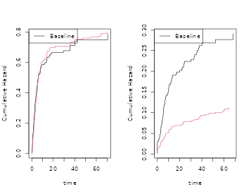
CIF Delayed entry
Now assume that given covariates F_1(t;X) = P(T < t, \epsilon=1|X) and F_2(t;X) = P(T < t, \epsilon=2|X) are two cumulative incidence functions that satisfies the needed constraints. We wish to generate data that follows these two piecewise linear cumulative incidence functions with delayed entry at time s. Given delayed entry at time s we should thus generate data that follows the cumulative incidence functions \tilde F_1(t,s;X)= \frac{F_1(t;X) - F_1(s;X)}{ 1 - F_1(s;X) - F_2(s;X)} and \tilde F_2(t,s;X)= \frac{F_2(t;X) - F_2(s;X)}{ 1 - F_1(s;X) - F_2(s;X)} This can be done according to the recipe in the previous section.
- First draw event type with conditional probabilities \tilde F_j(t,sX) for j=1,2 and the remaining survivors
- Second draw event time (timing) of chosen type with distribution (still conditional on being a survivor at entry) \begin{align*} \frac{\tilde F_j(t,sX)}{\tilde F_j(\tau,X)} & = \frac{F_j(t,X)- F_j(s,X)}{F_j(\tau,X)-F_j(s,X)} \mbox{for} j=1,2. \end{align*}
If only F_1 is specified, the function assumes a pure survival setting with F_2 \equiv 0. Note also that given event type the timing is unaffected by the truncation probability.
For the cloglog link the Fine-Gray model the timing can be drawn as \begin{align*} \Lambda_0^{-1}[ -\log(1-U ( F_j(\tau,X)-F_j(s,X)) - F_j(s,X) ] \exp(- X^T \beta) \end{align*} and for the logit-link as \begin{align*} \Lambda_0^{-1}[ \exp(logit( U ( F_j(\tau,X)-F_j(s,X)) + F_j(s,X)))] \exp(- X^T \beta) \end{align*}
data(bmt)
## two cloglog
cif1 <- cifregFG(Event(time,cause)~tcell+platelet,data=bmt,cause=1)
cif2 <- cifregFG(Event(time,cause)~tcell+platelet,data=bmt,cause=2)
nsim <- 800
entry <- rbinom(nsim,1,0.5)*runif(nsim)*60
dd <- sim_cif(cif1,nsim,data=bmt,entry=entry)
scif1 <- cif(Event(entry,time,cause)~strata(tcell,platelet),data=dd,cause=1)
plot(scif1);
###
pcif1 <- predict(cif1,expand.grid(tcell=0:1,platelet=0:1))
plot(pcif1,add=TRUE)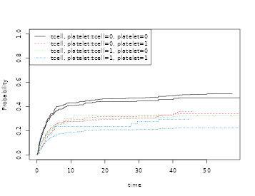
Combining two causes drawn with restriction F_1+\tilde F_2 \leq 1, thus modifying \tilde F_2= F_2 (1-F_1(\tau)) where F_1 and F_2 are the two input cumulative incidence models
dd <- sim_cifs(list(cif1,cif2),nsim,data=bmt,entry=entry)
## logistic link; nonparametric Aalen-Johansen with delayed entry
scif1 <- cif(Event(entry,time,cause)~strata(tcell,platelet),data=dd,cause=1)
plot(scif1);
###
pcif1 <- predict(cif1,expand.grid(tcell=0:1,platelet=0:1))
plot(pcif1,add=TRUE)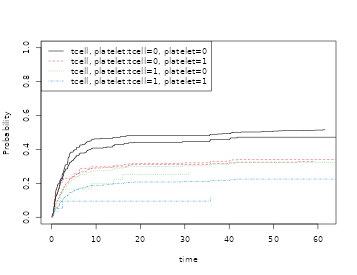
Here we again combine two causes, now using parametric baselines via
simul_cifs. The baselines for F_1 and F_2
are returned as attributes; note that F_2 is modified to satisfy the constraint
F_1 + F_2 \leq 1 (remember that due to
the restriction the F_2 model is
modified).
rho1 <- 0.3; rho2 <- 4
set.seed(100)
beta=c(0.3,-0.3,-0.3,0.3)
dep=0
rc <- 0.9
n <- nsim
entry <- rbinom(n,1,0.5)*runif(n)*6
data <- simul_cifs(n,rho1,rho2,beta,bin=1,rc=0.5,rate=c(3,7),entry=entry)
###
scif1 <- cif(Event(entry,time,status)~strata(Z1,Z2),data)
plot(scif1,ylim=c(0,0.4))
###
## and without delayed entry for comparison
data <- simul_cifs(n,rho1,rho2,beta,bin=1,rc=0.5,rate=c(3,7))
scif1 <- cif(Event(entry,time,status)~strata(Z1,Z2),data)
plot(scif1,add=TRUE)
## true baseline cif, cloglog link
baset <- attr(data,"Lam1")[,2]
timet <- attr(data,"Lam1")[,1]
F1base <- 1-exp(-baset)
lines(timet,F1base,lwd=3)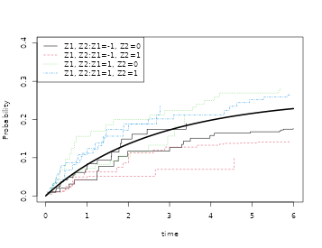
Recurrent events
See also recurrent events vignette
-
sim_recurrent_tssimulates from the Two-Stage model where:- Rate of the terminal event among survivors is on Cox form
(
phreg) - Rate of recurrent events among survivors is on Cox form
(
phreg) - Marginal rate of recurrent events follows a Ghosh-Lin model
(
recreg) - Simulations are based on piecewise linear approximations on a grid
- Events can be dependent via a gamma-distributed frailty
- Rate of the terminal event among survivors is on Cox form
(
-
sim_recurrentII,sim_recurrent,sim_recurrent_list:- Frailty gamma models where the rates of recurrent events and the terminal event are specified via cumulative baselines and relative risk covariate effects, yielding a Cox model given the frailty and covariates
-
simRecurrentListsupports multiple recurrent event types and multiple causes of death
Two-stage models
The following example fits Cox models for recurrent events and the
terminal event on the hfactioncpx12 dataset, then simulates
data from the estimated two-stage model and re-estimates to verify
recovery of the parameters.
library(mets)
data(hfactioncpx12)
hf <- hfactioncpx12
hf$x <- as.numeric(hf$treatment)
n <- 200
## to fit Cox models
xr <- phreg(Surv(entry,time,status==1)~treatment+cluster(id),data=hf)
dr <- phreg(Surv(entry,time,status==2)~treatment+cluster(id),data=hf)
estimate(xr)
#> Estimate Std.Err 2.5% 97.5% P-value
#> treatment1 -0.1534 0.08145 -0.313 0.006286 0.05973
estimate(dr)
#> Estimate Std.Err 2.5% 97.5% P-value
#> treatment1 -0.4301 0.1831 -0.7889 -0.07132 0.0188
simcoxcox <- sim_recurrent_ts(xr,dr,n=n,data=hf)
xrs <- phreg(Surv(entry,time,status==1)~treatment+cluster(id),data=simcoxcox)
drs <- phreg(Surv(entry,time,status==3)~treatment+cluster(id),data=simcoxcox)
estimate(xrs)
#> Estimate Std.Err 2.5% 97.5% P-value
#> treatment1 -0.3901 0.1969 -0.7762 -0.004138 0.04759
estimate(drs)
#> Estimate Std.Err 2.5% 97.5% P-value
#> treatment1 -0.2158 0.2827 -0.7698 0.3382 0.4453
par(mfrow=c(1,2))
plot(xrs);
plot(xr,add=TRUE)
###
plot(drs)
plot(dr,add=TRUE)Now with Ghosh-Lin and Cox marginals:
recGL <- recreg(Event(entry,time,status)~treatment+cluster(id),hf,death.code=2)
estimate(recGL)
#> Estimate Std.Err 2.5% 97.5% P-value
#> treatment1 -0.1104 0.07866 -0.2646 0.04376 0.1604
estimate(dr)
#> Estimate Std.Err 2.5% 97.5% P-value
#> treatment1 -0.4301 0.1831 -0.7889 -0.07132 0.0188
simglcox <- sim_recurrent_ts(recGL,dr,n=n,data=hf)
GLs <- recreg(Event(entry,time,status)~treatment+cluster(id),data=simglcox,death.code=3)
drs <- phreg(Surv(entry,time,status==3)~treatment+cluster(id),data=simglcox)
estimate(GLs)
#> Estimate Std.Err 2.5% 97.5% P-value
#> treatment1 -0.05645 0.1593 -0.3687 0.2558 0.723
estimate(drs)
#> Estimate Std.Err 2.5% 97.5% P-value
#> treatment1 -0.7905 0.3202 -1.418 -0.1629 0.01355
par(mfrow=c(1,2))
plot(GLs);
plot(recGL,add=TRUE)
plot(drs)
plot(dr,add=TRUE)We can also fit and simulate from stratified models:
data(hfactioncpx12)
hf <- hfactioncpx12
hf$x <- as.numeric(hf$treatment)
hf$age <- rnorm(741)[hf$id]
hf$Z1 <- rbinom(741,1,0.5)[hf$id]
xr <- phreg(Surv(entry,time,status==1)~strata(x)+age+cluster(id),data=hf)
dr <- phreg(Surv(entry,time,status==2)~x+strata(Z1)+age+cluster(id),data=hf)
n <- 400
rr <- sim_recurrent_ts(xr,dr,n=n,data=hf)
rxr <- phreg(Surv(entry,time,status==1)~strata(x)+age+cluster(id),data=rr)
rdr <- phreg(Surv(entry,time,status==3)~x+strata(Z1)+age+cluster(id),data=rr)
estimate(xr)
#> Estimate Std.Err 2.5% 97.5% P-value
#> age 0.0273 0.03922 -0.04958 0.1042 0.4864
estimate(rxr)
#> Estimate Std.Err 2.5% 97.5% P-value
#> age 0.0002297 0.05522 -0.108 0.1085 0.9967
estimate(dr)
#> Estimate Std.Err 2.5% 97.5% P-value
#> x -0.42738 0.18252 -0.78510 -0.06965 0.0192
#> age 0.09527 0.08586 -0.07301 0.26354 0.2672
estimate(rdr)
#> Estimate Std.Err 2.5% 97.5% P-value
#> x -0.48230 0.20942 -0.8928 -0.07185 0.02128
#> age 0.04296 0.09506 -0.1433 0.22927 0.65130
plot(xr); plot(rxr,add=TRUE)
plot(dr,add=TRUE,col=2); plot(rdr,add=TRUE,col=2)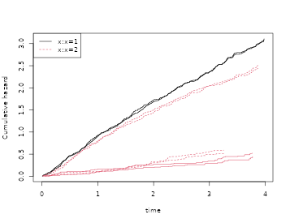
###
glr <- recreg(Event(entry,time,status)~strata(x)+age+cluster(id),data=hf,death.code=2)
dr <- phreg(Surv(entry,time,status==2)~x+strata(Z1)+age+cluster(id),data=hf)
n <- 400
rr <- sim_recurrent_ts(glr,dr,n=n,data=hf)
rxr <- recreg(Event(entry,time,status)~strata(x)+age+cluster(id),data=rr,death.code=3)
rdr <- phreg(Surv(entry,time,status==3)~x+strata(Z1)+age+cluster(id),data=rr)
estimate(xr)
#> Estimate Std.Err 2.5% 97.5% P-value
#> age 0.0273 0.03922 -0.04958 0.1042 0.4864
estimate(rxr)
#> Estimate Std.Err 2.5% 97.5% P-value
#> age 0.06015 0.06414 -0.06556 0.1859 0.3483
estimate(dr)
#> Estimate Std.Err 2.5% 97.5% P-value
#> x -0.42738 0.18252 -0.78510 -0.06965 0.0192
#> age 0.09527 0.08586 -0.07301 0.26354 0.2672
estimate(rdr)
#> Estimate Std.Err 2.5% 97.5% P-value
#> x -0.48433 0.2076 -0.8913 -0.07738 0.01967
#> age 0.05767 0.1067 -0.1515 0.26682 0.58887
plot(glr); plot(rxr,add=TRUE)
plot(dr,add=TRUE,col=2); plot(rdr,add=TRUE,col=2)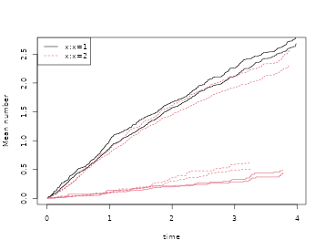
Frailty models (simulations based on the rates/intensities)
data(CPH_HPN_CRBSI)
dr <- CPH_HPN_CRBSI$terminal
base1 <- CPH_HPN_CRBSI$crbsi
base4 <- CPH_HPN_CRBSI$mechanical
n <- 400
rr <- sim_recurrent(n,base1,death.cumhaz=dr)
###
mets:::showfitsim(causes=1,rr,dr,base1,base1,which=1:2)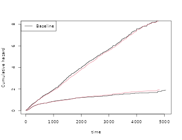
rr <- sim_recurrentII(n,base1,base4,death.cumhaz=dr)
dtable(rr,~death+status)
#>
#> status 0 1 2
#> death
#> 0 41 1123 161
#> 1 359 0 0
mets:::showfitsim(causes=2,rr,dr,base1,base4,which=1:2)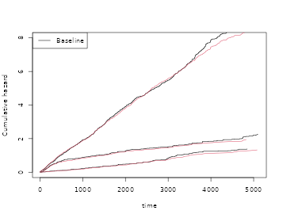
cumhaz <- list(base1,base1,base4)
drl <- list(dr,base4)
rr <- sim_recurrent_list(n,cumhaz,death.cumhaz=drl)
dtable(rr,~death+status)
#>
#> status 0 1 2 3
#> death
#> 0 10 832 847 111
#> 1 277 0 0 0
#> 2 113 0 0 0
mets:::showfitsimList(rr,cumhaz,drl) 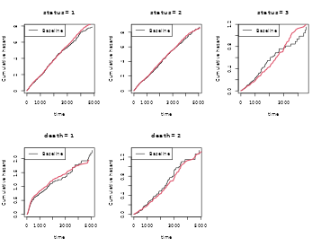
SessionInfo
sessionInfo()
#> R version 4.6.0 (2026-04-24)
#> Platform: x86_64-pc-linux-gnu
#> Running under: Ubuntu 24.04.4 LTS
#>
#> Matrix products: default
#> BLAS: /usr/lib/x86_64-linux-gnu/openblas-pthread/libblas.so.3
#> LAPACK: /usr/lib/x86_64-linux-gnu/openblas-pthread/libopenblasp-r0.3.26.so; LAPACK version 3.12.0
#>
#> locale:
#> [1] LC_CTYPE=C.UTF-8 LC_NUMERIC=C LC_TIME=C.UTF-8
#> [4] LC_COLLATE=C.UTF-8 LC_MONETARY=C.UTF-8 LC_MESSAGES=C.UTF-8
#> [7] LC_PAPER=C.UTF-8 LC_NAME=C LC_ADDRESS=C
#> [10] LC_TELEPHONE=C LC_MEASUREMENT=C.UTF-8 LC_IDENTIFICATION=C
#>
#> time zone: UTC
#> tzcode source: system (glibc)
#>
#> attached base packages:
#> [1] stats graphics grDevices utils datasets methods base
#>
#> other attached packages:
#> [1] mets_1.3.10
#>
#> loaded via a namespace (and not attached):
#> [1] cli_3.6.6 knitr_1.51 rlang_1.2.0
#> [4] xfun_0.57 textshaping_1.0.5 jsonlite_2.0.0
#> [7] listenv_0.10.1 future.apply_1.20.2 lava_1.9.1
#> [10] htmltools_0.5.9 ragg_1.5.2 sass_0.4.10
#> [13] rmarkdown_2.31 grid_4.6.0 evaluate_1.0.5
#> [16] jquerylib_0.1.4 fastmap_1.2.0 numDeriv_2016.8-1.1
#> [19] yaml_2.3.12 mvtnorm_1.3-7 lifecycle_1.0.5
#> [22] timereg_2.0.7 compiler_4.6.0 codetools_0.2-20
#> [25] fs_2.1.0 htmlwidgets_1.6.4 Rcpp_1.1.1-1.1
#> [28] future_1.70.0 lattice_0.22-9 systemfonts_1.3.2
#> [31] digest_0.6.39 R6_2.6.1 parallelly_1.47.0
#> [34] parallel_4.6.0 splines_4.6.0 Matrix_1.7-5
#> [37] bslib_0.11.0 tools_4.6.0 RcppArmadillo_15.2.6-1
#> [40] globals_0.19.1 survival_3.8-6 pkgdown_2.2.0
#> [43] cachem_1.1.0 desc_1.4.3